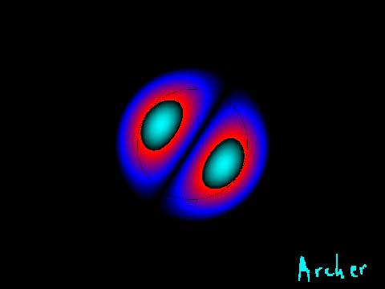
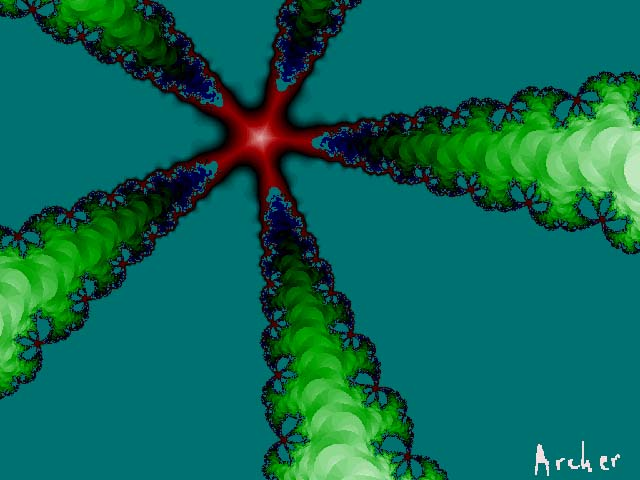
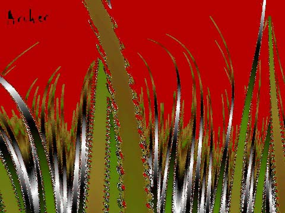
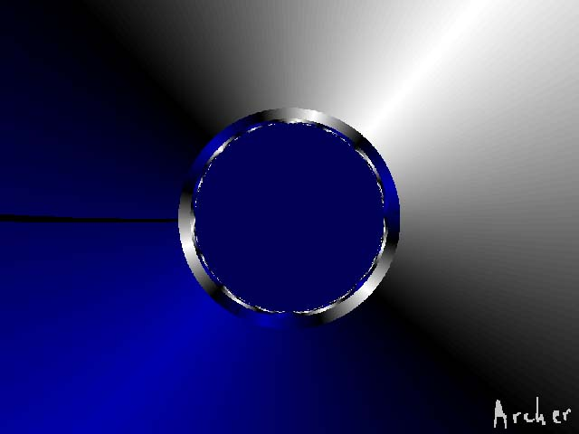
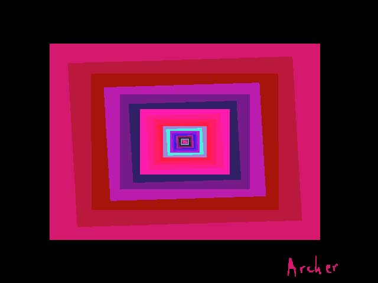
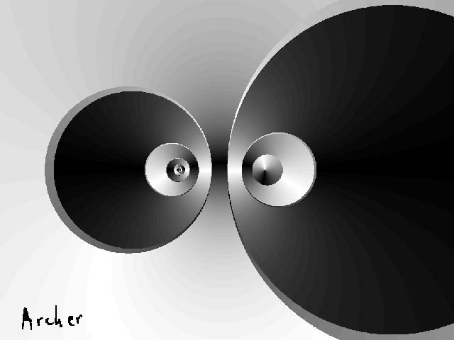
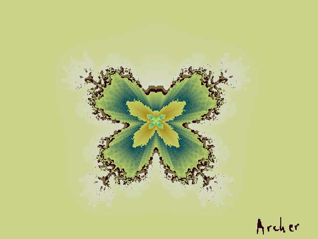

These are some of my first fractals. Most use conventional formulas. In restrospect, many seem to have the virtue of simplicity, and maybe even elegance. They are generally not calculation-intensive and do not have a high pixel count, so even a web page of several of them will render quickly. They are signed but undated, and I can hardly remember when they were first drawn.







Return to
Don Archer Digital Art